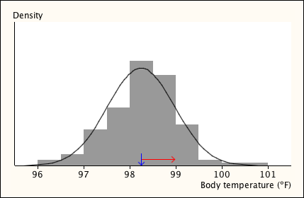

This test can also be used for continuous data if the data are first summarised in a frequency table. The range of possible values of the distribution is partitioned into classes such as "10 ≤ X < 11", then the frequencies are the numbers of values in these classes.
Body temperature
In a study to determine the "normal" body temperature of healthy adults, body temperatures were found from 130 adults. The following frequency table summarises the data.
| Temperature, x | Frequency |
|---|---|
| \(X \lt 96.0\) | 0 |
| \(96.0 \le X \lt 96.5\) | 2 |
| \(96.5 \le X \lt 97.0\) | 4 |
| \(97.0 \le X \lt 97.5\) | 13 |
| \(97.5 \le X \lt 98.0\) | 21 |
| \(98.0 \le X \lt 98.5\) | 38 |
| \(98.5 \le X \lt 99.0\) | 33 |
| \(99.0 \le X \lt 99.5\) | 15 |
| \(99.5 \le X \lt 100.0\) | 2 |
| \(100.0 \le X \lt 100.5\) | 1 |
| \(100.5 \le X \lt 101.0\) | 1 |
| \(X \ge 101.0\) | 0 |
Could this be a random sample from a normal distribution?
We first find the method of moments estimates of the normal distribution's parameters,
\[ \hat{\mu} \;=\; \overline{x} \;=\; 98.25 \spaced{and} \hat{\sigma} \;=\; s \;=\; 0.7332 \]A histogram of the data and the best-fitting normal distribution seem similar in shape, but we will formally test the normal model with a chi-squared goodness-of-fit test.

The probabilities for values within these classes were found from the best-fitting \(\NormalDistn(\mu=98.25, \sigma = 0.7332)\) distribution, then multiplied by the number of values, 130, to get expected counts. However since several expected counts are low, classes must be combined before calculating the chi-squared goodness-of-fit statistic.
| Temperature x |
Observed count, O |
Expected count, E |
|---|---|---|
| \(X \lt 97.0\) | 6 | 5.61 |
| \(97.0 \le X \lt 97.5\) | 13 | 14.20 |
| \(97.5 \le X \lt 98.0\) | 21 | 27.76 |
| \(98.0 \le X \lt 98.5\) | 38 | 34.69 |
| \(98.5 \le X \lt 99.0\) | 33 | 27.72 |
| \(99.0 \le X \lt 99.5\) | 15 | 14.16 |
| \(X \ge 99.5\) | 4 | 5.71 |
The test statistic is
\[ X^2 \;=\; \sum_{x} {\frac{\left(O_x - E_x\right)^2}{E_x}} \;=\; 3.657 \]Since there are 7 counts in the combined frequency table and 2 estimated parameters, the test statistic should be compared to the chi-squared distribution with \((7-2-1) = 4\) degrees of freedom. The p-value is the probability of a value from the \(\ChiSqrDistn(4 \text{ df})\) distribution as high as 3.657 and can be found (e.g. using Excel) to be 0.4545.
Since there would be almost 50% probability of getting observed counts as far from those expected from a normal distribution if the data did come from a normal distribution, we conclude that the data are consistent with coming from a normal distribution.